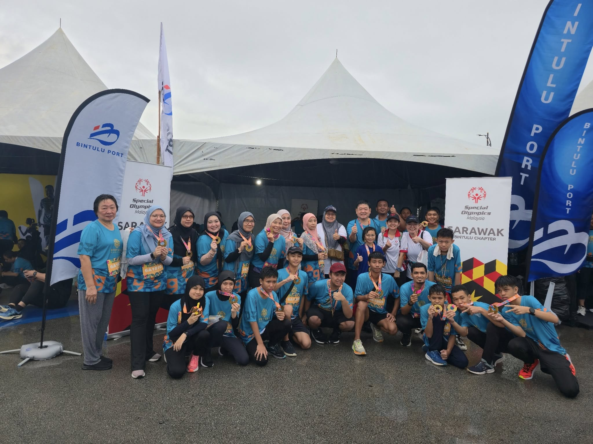

Established in July 2024, Special Olympics Bintulu Chapter is dedicated to promoting the inclusion, dignity, and respect of individuals with intellectual disabilities through sports and community engagement. Our chapter provides year-round opportunities for children and adults with intellectual disabilities to participate in sports training and competition, alongside health programs and leadership development initiatives.
At the heart of our mission is the belief that everyone, regardless of ability, deserves to experience joy, develop physical fitness, and connect with others in a spirit of friendship and mutual respect. Through our programs, athletes gain more than just physical strength — they develop confidence, courage, and a sense of belonging within the community.
Special Olympics Bintulu offers a platform for volunteers, coaches, and local supporters to make a lasting difference. It's here, in Bintulu, where the transformative power of sport brings together individuals from all walks of life, helping to break down barriers and challenge perceptions about intellectual disabilities. We believe that through shared experiences, we can create a more inclusive society, one where every individual is valued and empowered to reach their full potential.
Visit our official Facebook page of Special Olympics Bintulu Chapter
VISIT PAGE
(Mobile) +60 19-530 2305